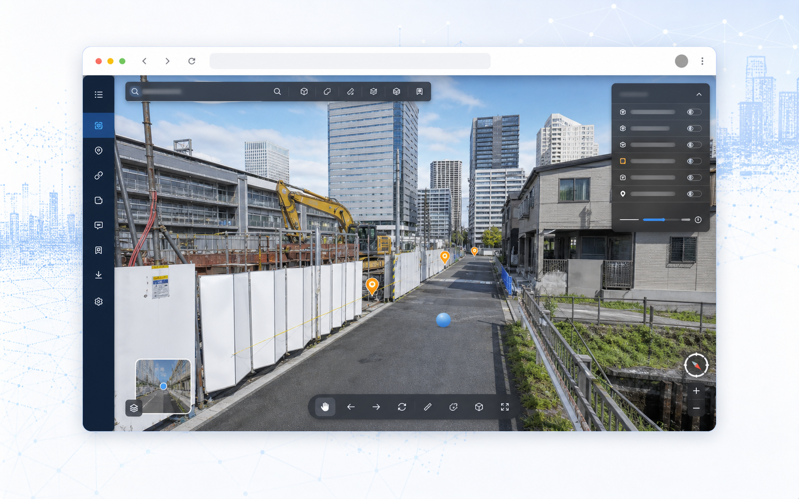
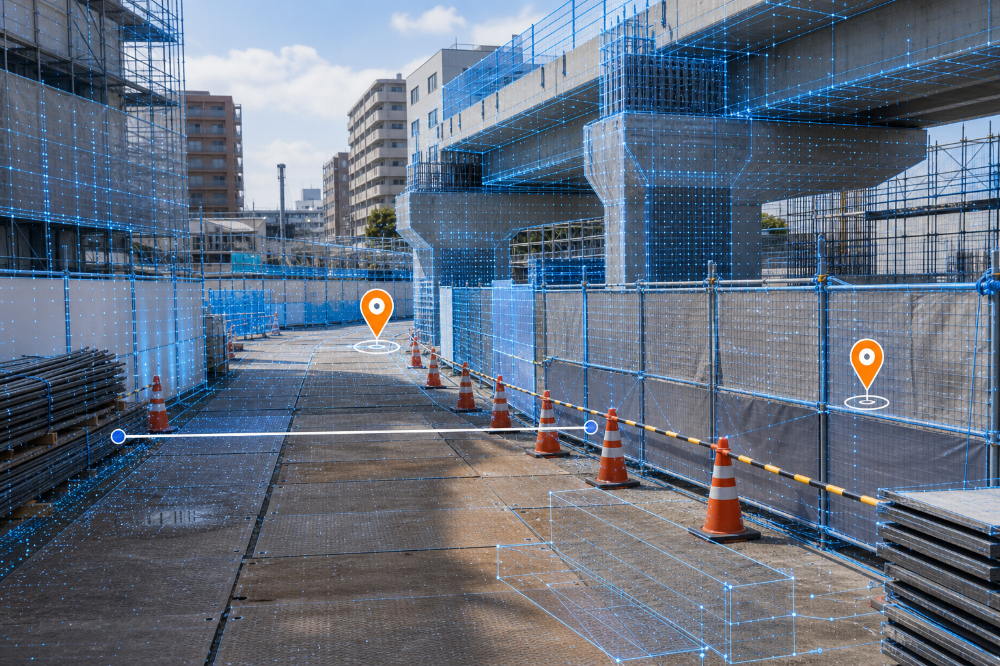
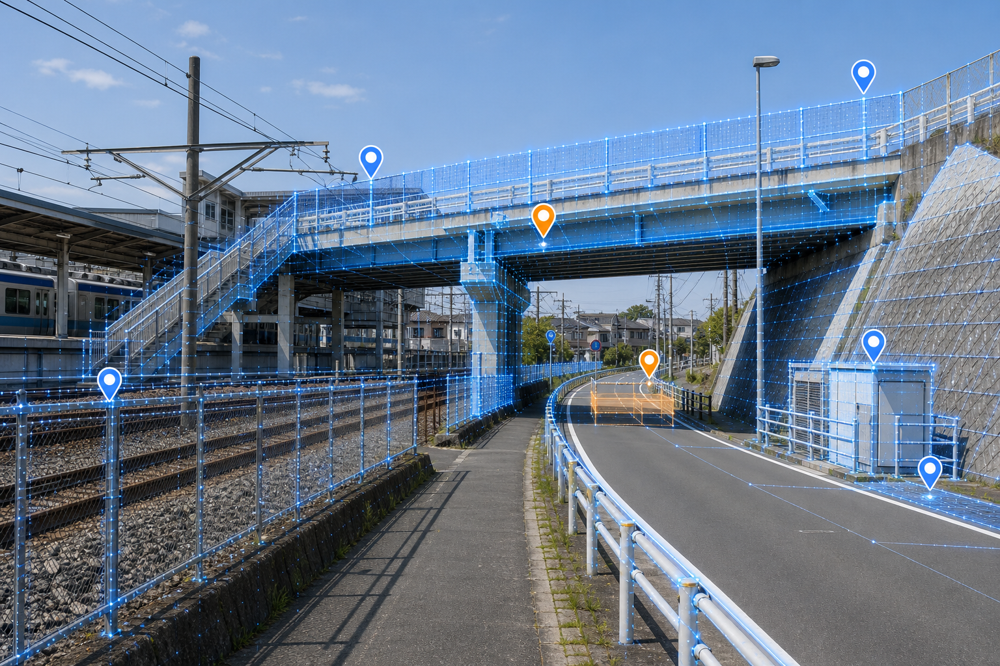
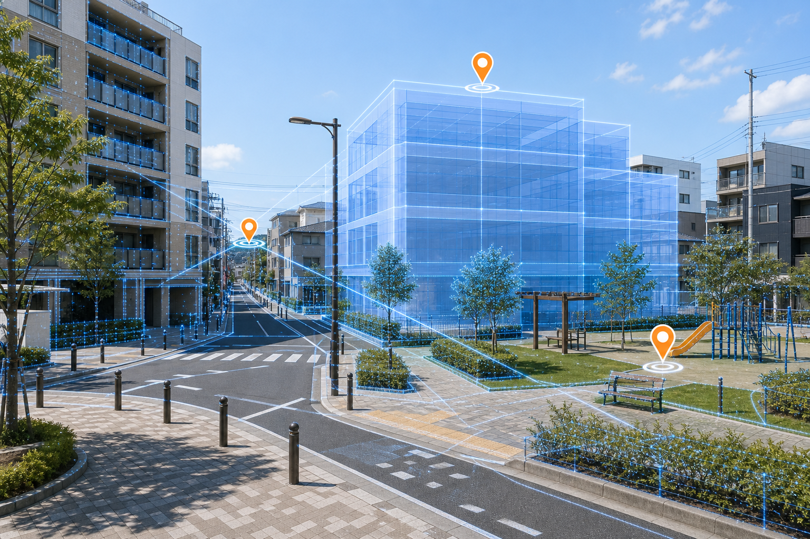
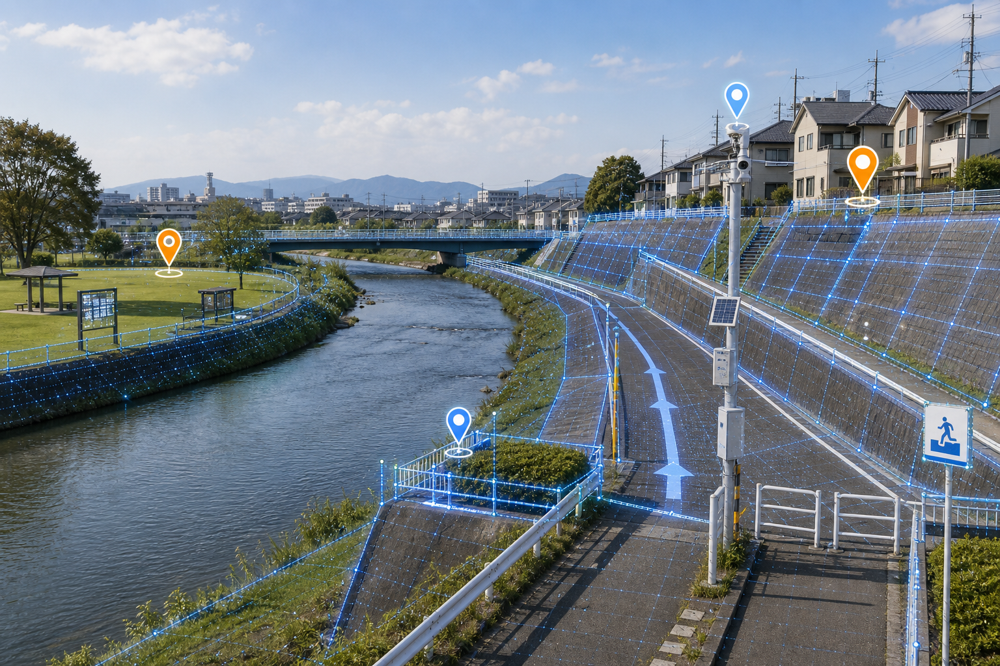
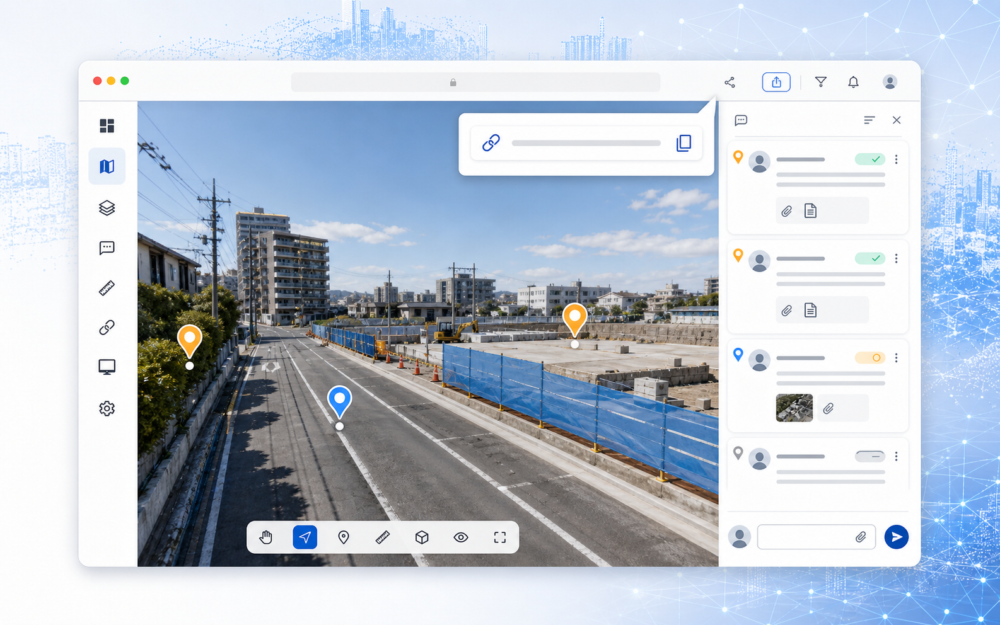

3D空間表示
写真に近い3D空間で現場を確認
現場を可視化し、意思決定を加速する。
Machicaは、3DGS（写真に近い3D空間）に設計モデルやコメントを重ね、ブラウザで共有できる3Dビューワーです。
写真に近い3D空間で現場を確認
設計モデルを現況に重ねて確認
指摘や資料を3D上に残して共有
3D空間上で距離を確認
見ている視点をそのまま共有
専用アプリなしで閲覧
実際の画面操作を短い動画で確認できます。現場の3D空間を動かしながら、設計モデルや設備の見え方をブラウザ上で検討できます。
写真、図面、メモが分かれていると、確認と共有に時間がかかります。
移動や日程調整が多く、関係者全員で同じ場所を見るまでに時間がかかりやすい。
写真や図面だけでは、どこの話をしているのか伝わりにくい場面があります。
現況と設計情報を別々に見るため、判断や説明に手戻りが生まれやすい。
Machicaは、現場や施設を写真に近い3D空間として再現し、設計モデル、コメント、資料、確認位置を同じ画面で扱えるビューワーです。
現地に行かなくても、関係者が同じ視点で状況を確認できます。確認した場所をそのまま共有できるため、説明や合意形成を進めやすくなります。
機能を見る
建設、維持管理、開発、防災まで、同じ視点で話したい場面に使えます。

施工管理、進捗確認、検査対応、出来形確認の効率化。

点検・維持管理、災害対応、長寿命化計画の検討。

開発計画の合意形成、近隣説明、景観検討。

被害状況の可視化、復旧計画の立案・共有。
見える、重ねる、残す、共有する。確認作業を前に進めるための基本機能をまとめています。
現場や施設の状態を、画面上で自由に見回せます。写真だけでは伝わりにくい奥行きや位置関係も、同じ視点で共有できます。
現況の上に設計モデルや設備モデルを重ねて表示できます。配置後の見え方を事前に確認し、説明や合意形成に役立てられます。
撮る、つくる、重ねる、共有する。現場確認に必要な流れをシンプルに進めます。
市販のカメラ、ハンディスキャナ、ドローンを用いて現場データを取得。
撮影データから、実写のようにリアルな3D空間を自動生成。
BIM/CIMモデルや現場資料を3D空間に重ね合わせ、現実と設計の差分を可視化します。
URLの共有で関係者全員が同じ空間を確認。意思決定のスピードを最大化します。
閲覧はブラウザで利用できます。詳しい対応環境は用途に合わせて確認します。
現場の3Dデータや設計モデルなどを、用途に合わせて扱います。
スマホ向けの表示にも対応する方向です。大きなデータは軽量版の準備が前提になる場合があります。
3D空間上に指摘や資料を残し、関係者と共有できます。
はい。実証利用や機能改善に協力いただけるパートナーを募集しています。
公開前に最新仕様を確認し、LP表現を確定します。現時点では距離計測を中心に掲載しています。
資料請求、デモ相談、実証利用相談はこちらからお問い合わせください。

指摘や資料を3D上に残し、確認の往復を減らす。
伝えたい場所にコメントや資料を紐づけることで、確認事項が散らばりにくくなります。URL共有で、相手も同じ視点から確認できます。